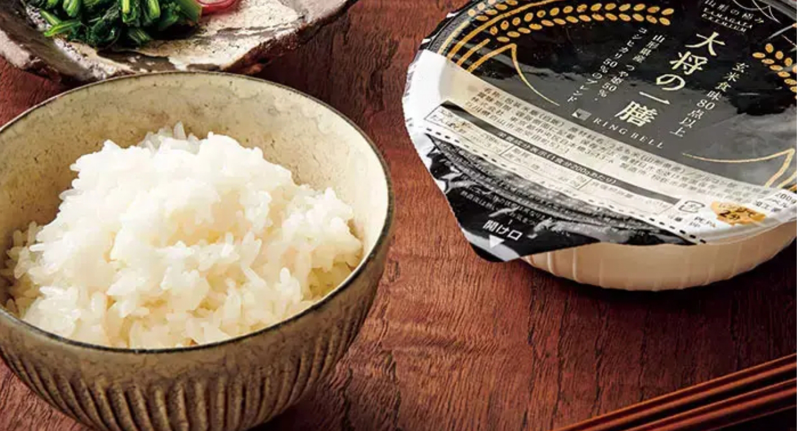
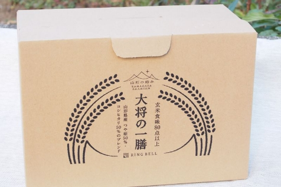
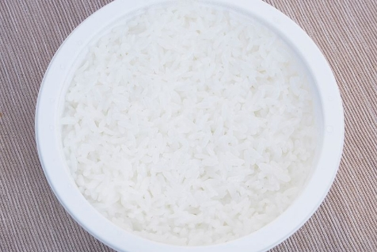
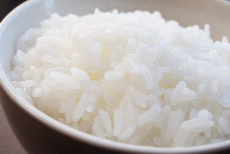
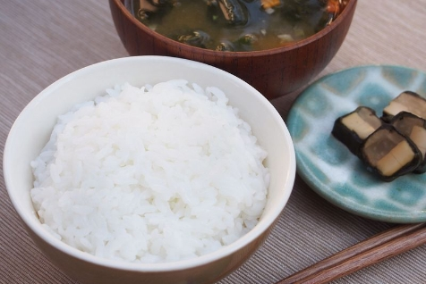

数量限定
【令和のコメ不足】応援企画
「大将の一膳」を
特別価格でご提供！
厳選した高い食味指数の玄米を加工
「つや姫」＆「こしひかり」の
炊き立ての味が
レンジで2分でお手軽に
ここが「極み」
- レンジで2分加熱するだけで炊き立ての味
- 国産米の標準を大きく超える「玄米食味80点以上」の玄米のみ
- つや姫50％、コシヒカリ50％をブレンドして、絶妙なおいしさを実現

国産米の標準を大きく超える
「玄米食味80点以上」の玄米のみを厳選
食味値数の高い、厳選された山形県産のブレンドで実現した「大将の一膳」。食味値とは、米のおいしさを表す指数のことで、アミロース、タンパク質、水分、脂肪酸度の4つを近赤外線分析計で成分測定し算出します。65点から75点が日本産米の標準値ですが、「大将の一膳」は玄米食味80点以上と高得点のみの原料を使用。山形県産「つや姫」50％、「コシヒカリ」50％の絶妙なブレンドがおいしさの秘密です。レンジで2分加熱するだけで、炊きたてのご飯の味わいが楽しめます。
レビュー
開封から味わいまで、
美食の専門家が徹底レビュー！
遠近感が分からなくなりそうなほど、米粒一つ一つが大きいです。そして湯気の香りがもう甘い！
ライター猫田しげる さん
-
レンジで2分加熱するだけで炊きたてが味わえるのだから、ともあれ有り難い。

-
パックを開けてみると、新雪のように真っ白なお米が現れました。

-
見てくださいこの粒の大きさ！ 遠近感が分からなくなりそうなほど。

-
なんというむっちり感。釜で炊いたようなみずみずしさがあり、粘りも強い。
